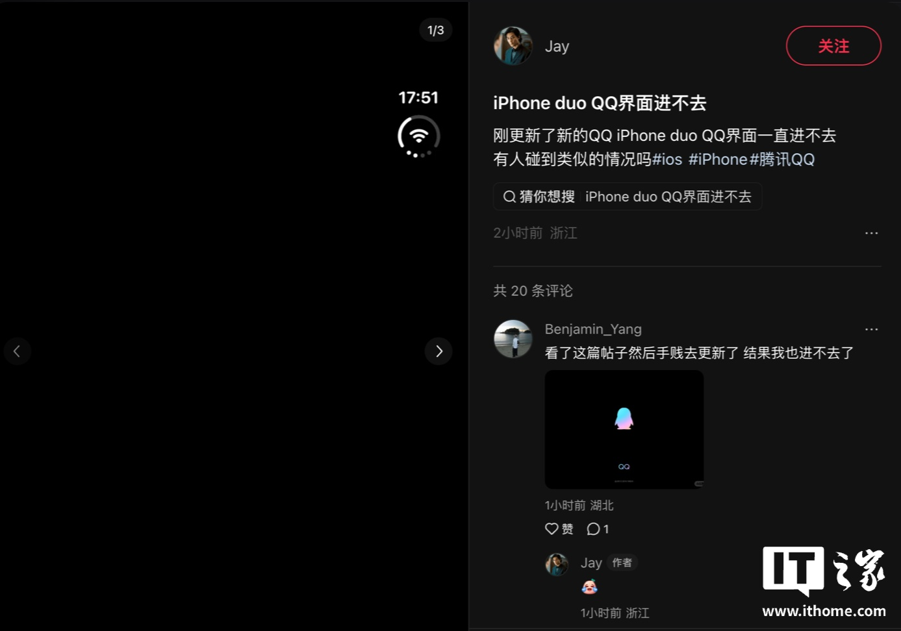
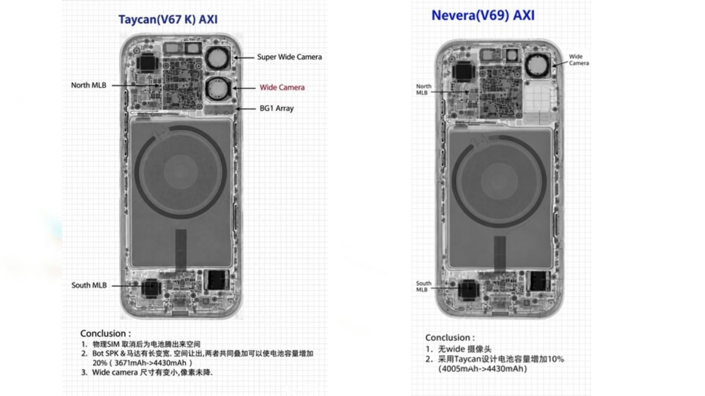
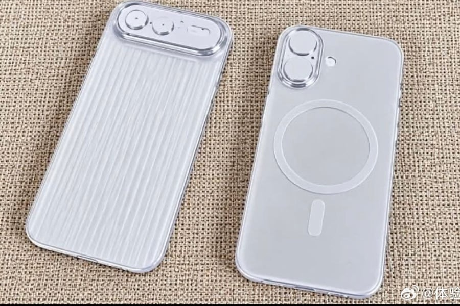
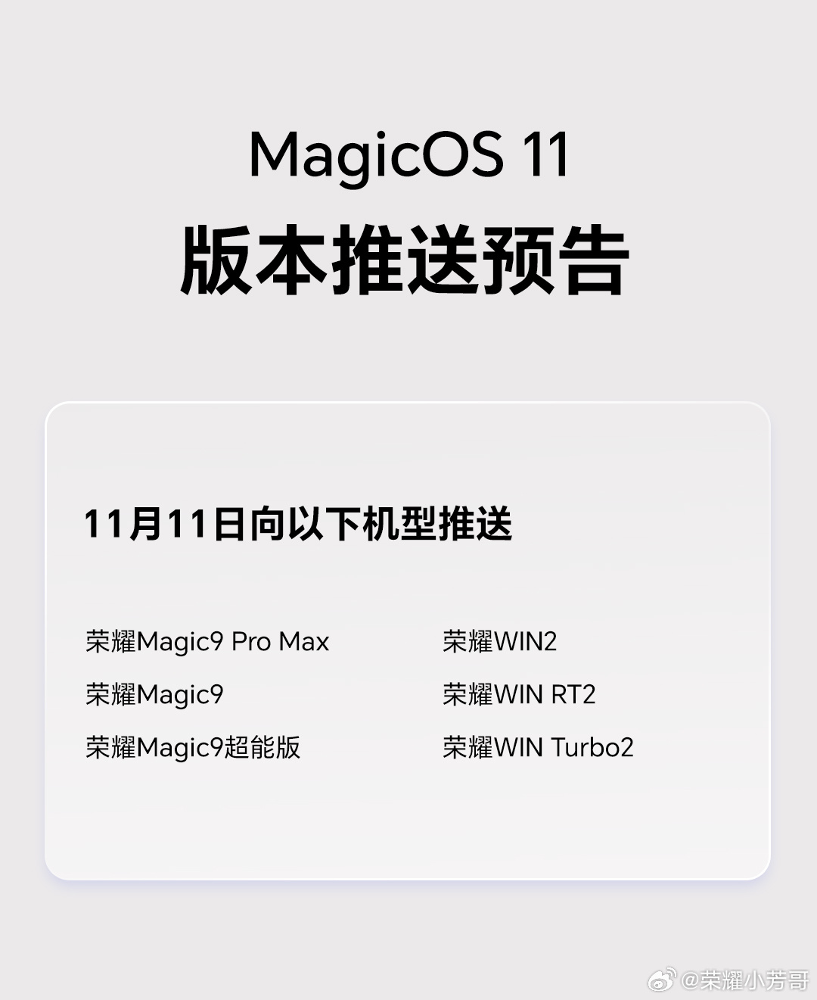
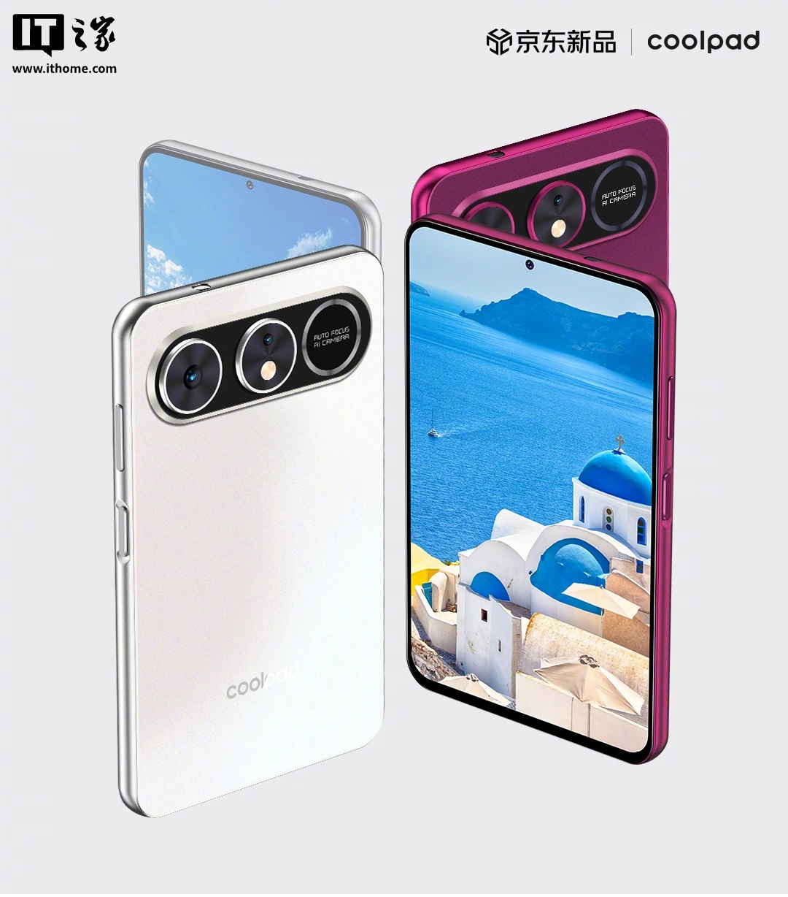
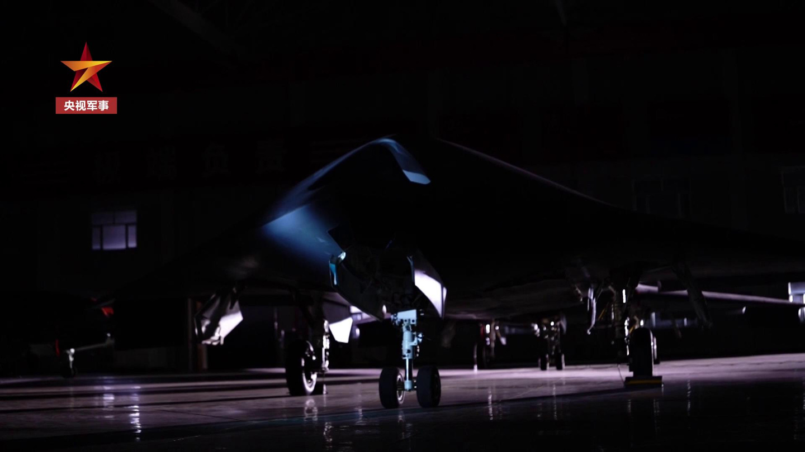
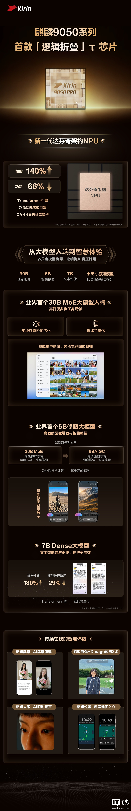

뉴스
기술의 변화, 매일 한눈에.
카메라 · 스마트폰 · AI, 해외 테크 소식을 모아 전합니다.
최근 발행2026-11-12
새로 들어온 소식


최신 뉴스
전체 4,298개 기사
다수의 사용자, Apple iPhone에서 QQ iOS 최신 9.3.85 버전 업데이트 후 앱 실행 불가 문제 제기: 시작 화면 멈춤 또는 검은 화면 발생

Oppo Reno 17 시리즈, 4개의 50MP 카메라 탑재 공식 확인

iPhone 18과 18e, 외형뿐만 아니라 내부도 공유할 가능성 제기

iPhone 18 및 iPhone Air 2 더미 모델, 새로운 유출에서 후면 카메라 레이아웃 공개
iPhone 17, 이중 보조금 적용 시 4,990위안으로 5,000위안 이하 최저가 기록
Huawei 스타라이트 스마트폰 공식 웨이보 오픈: 신규 브랜드 11월 20일 공개, 위청둥 OSTA O1 Pro 바 타입 신규 스마트폰으로 교체

Honor Magic9, WIN2 시리즈 스마트폰 MagicOS 11 새 버전 업데이트: 듀얼 SIM 신호 아이콘 스택, 크로스 브랜드 원터치 전송 기능 추가

Honor의 첫 와이드스크린 스마트폰, 8000mAh 이상의 배터리 탑재 전망

Coolpad COOL X Wide 바 타입 스마트폰, 출시 3일 만에 판매량 1만 대 돌파, 999~1399위안

중국 최초 상용 중소형 순수 태양광 드론 '경계병' 첫 비행 성공: 날개 폭 8m, 설계 항속 시간 30시간

'현룡' 스텔스 성능 세계 최고 수준! 중국 공격-11 정찰·공격 드론의 더 많은 핵심 역량 공개, 미래 전장 형태 바꿀 수도

Canon, KrF 반도체 리소그래피 장비 FPA-6400ES6a 출시, 높은 생산성과 업계 최고 수준의 오버레이 정밀도 구현 선언
Apple과 Samsung, 세계 최대 스마트폰 시장 경쟁 위해 중국 AI 파트너와 협력

또 다른 "아이폰 X의 순간": 20주년 기념 Apple 스마트폰 전망, 전체가 유리 같고 버튼은 모두 솔리드 스테이트 방식

(업데이트: 정상 복구) Apple iCloud 서비스 전 세계 장애 발생, 등록 로그인, 사진 동기화 및 나의 iPhone 찾기 등 영향

iOS 27.3, Apple Siri AI 생태계 퍼즐 완성: 건강 정보 이해, 92가지 데이터 커버

Huawei 기린 9050 시리즈 칩, 차세대 다빈치 아키텍처 NPU 탑재 공식 발표, 업계 최초 30B MoE 대규모 모델 온디바이스 구현

Apple, Apple Intelligence 클라우드 AI 사용량 제한 계획: iCloud+ 구독으로 용량 확장 가능, Logic Pro는 이미 사용량 패키지 별도 판매 중

Adobe Photoshop, AI 진화로 사진 재조명 및 그림자 제거 기능 추가

Vivo X500 Ultra, 3개 카메라 중 2개에 소니 LOFIC 센서 탑재할 수도

카메라 전면 유리만 닦는 테슬라 레이저 와이퍼 기술, 사이버캡(Cybercab) 무인 택시에 적용될 전망
검색 결과가 없습니다
다른 검색어를 입력하거나 필터를 초기화해 보세요.